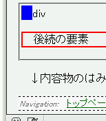
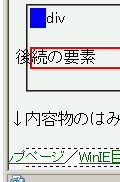

最後の子要素が非匿名ブロックレベル要素である要素の四方にパディングを設置し、さらに左または右にボーダーを設置すると、その要素に後続する要素の内容物がボーダーを設置した方向にずれてしまう。
<div style="border-left:1em solid blue; padding:1px;"> <div>div</div> </div> <p style="border:2px solid red;">後続の要素</p>
p要素の内容物をボーダーの外にはみ出させるような指定は行っていません。
※実際に表示させたものはページ末にあります。
Netscape7.1標準モード
WinIE6.0標準モード
この不具合によって左右にずれている文字列にリンクが含まれており、さらにその:hover擬似クラスに背景やfont-weight, font-sizeなどのプロパティを指定している場合、リンクが:hover状態になったときに周辺の文字列が移動することがあります。例えば、このページの末尾にあるリンクにマウスポインタ等を乗せると、左方にはみ出していた文字列が右に移動するはずです。
症状で示した条件が1つでも満たされなければこの不具合は発生しません。例えば、ボーダーを内側の要素に設置するなどの方法で不具合を回避することができます。あるいは、外側の要素に対して下ボーダーを設置することでもこの不具合を回避することができます。
<div style="border-left:1em solid blue; border-bottom:2px solid blue; padding:1px;"> <div>div</div> </div> <p style="border:2px solid red;">後続の要素</p>
後続の要素
WinIE6.0の標準モードと互換モードで不具合の発生を確認しました。
後続の要素
↓内容物のはみ出しはページ末まで続くので注意してください。